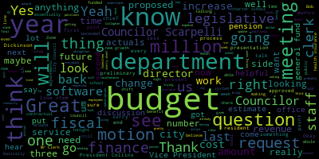
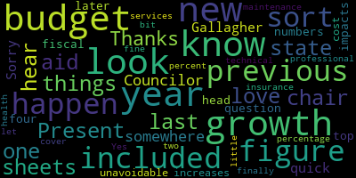
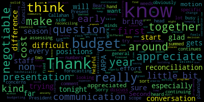
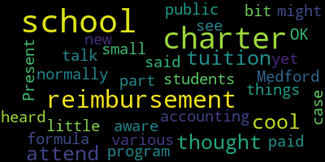
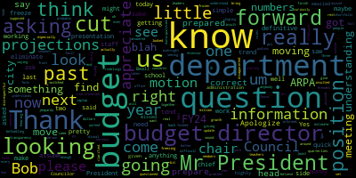

AI-generated transcript of City Council Committee of the Whole 04-23-24
Back to all transcripts
[Bears]: Medford City Council Committee of the whole April 23rd 2024 is called the order. Mr. Clerk, please call the roll.
[Hurtubise]: Councilor Callahan?
[Callahan]: Present
[Hurtubise]: Vice President Collins?
[Collins]: Present
[Hurtubise]: Councilor Lazzaro?
[Lazzaro]: Present
[Hurtubise]: Councilor Leming?
[Leming]: Present
[Hurtubise]: Councilor Scarpelli?
[Scarpelli]: Present
[Hurtubise]: President Bears?
[Bears]: Present 6 present, 1 absent. The meeting is called to order. There will be a meeting in the Medford City Council, Committee of the Whole, 6 p.m. in the City Council Chamber, second floor, Medford City Hall, 85 George B. Hassett Drive, Medford, MA, and via Zoom. The purpose of this meeting is to discuss paper 24-045, the annual budget process for fiscal 25. This is a preliminary budget meeting. And tonight this is the second preliminary budget meeting of the FY 25 budget process. The mayor has communicated the following presentations will occur in the following departments will be present. We will have a presentation by director finance director Bob Dickinson on the budget. as it stands now, kind of the top lines of the budget, and we will also hear from the legislative department, which is the city council, the city clerk, and the finance department. So we are all here and we are all present. Given that, I will turn it over to the chief of staff and the finance director, Nina Nazarian and Bob Dickinson, to give us the first look at our fiscal 25 budget, as well as a financial update.
[Dickinson]: Can everyone hear me? I have an echo. So, hello. I have this before you. This is page one, obviously, the intro of the agenda. This is what we're going to go through tonight. What's going on in the finance department right now? what's going on in the budget. I see you have budget sheets as of the third quarter for the city for 2024. Then we'll go through revenue estimates, the levy limit, local receipts, total available for the budget, the budget, things that are impacting the 2025 budget process, and then adjustments that we've made to try and make that look better, basically. So what's going on right now with us? State reporting and pretty much done with state reporting. I just have to put it in the format that the state likes, ship it off to the Department of Local Services, our representative there. I've been in touch with her. She knows that's going on. The fiscal 23 books are all closed. Once I get the state reporting in, that gets shipped off to the auditors, and they will they will put out the audit, they do our Schedule A so that all of that work will be done. They do our fixed asset reporting and everything. And once the state has all that information, they will give us a number for free cash and retained earnings for sewer enterprise funds, sewer water enterprise fund. Our DLS representative is putting it in her schedule, so I expect that the turnaround shouldn't be long, at least I'm hoping, and then we'll have numbers for that. So that's what's going on with that one. All right, general fund budget. You have the budget, the third quarter actuals with you right now. As you can see, the general fund budget was $179 million. Medford Public Schools were $71,227. They also used $2.8 million in ESSER funds, which are one-time funding. So we're trying to incorporate that into the fiscal 2025 budget. So once we've spent that, we will be able to cover it in the general fund budget, hopefully. I've worked closely with Jerry, who's the finance director over at the schools. And right now, we believe that the public school budget will actually come in. It'll be balanced. It'll be very, very tight. But we don't expect to have to do any budget transfers in order to cover a deficit for them right now. This is based on Jerry's projections, and I will be talking to him tomorrow. And obviously, as we get closer to the end of June, I will be talking to him on an ongoing basis. I wanna make sure that there's no surprises there. All right, moving on. New faces here. Does anybody need a primer on proposition two and a half, new growth, the levy limit, state aid, cherry sheets? We'll get into more detail when I show you the estimates for these, but if you're comfortable enough with what these things are, we could just move on. Councilor Callahan.
[Callahan]: I would love to hear more about the last one, state aid, chair sheets, and other things.
[Dickinson]: Yes, our friend UGA, Unrestricted General Government Aid, Chapter 70, School Aid, Veterans Benefits. This is state funding that they give us every year. Against that, there are a bunch of state assessments, for instance, charter school tuition. There are a few others. There's $150,000 in the revenue side that goes directly to the library, et cetera. Usually what happens with state aid is the governor will put out an estimate at the beginning of midway through the previous fiscal year, and then The legislature, I have most of this stuff up here if you actually want the categories, but, I was thinking terminology, cherry sheets, yeah. Governors, House Ways and Means, and then the Senate comes and does a proposal, and then at the end they all get together and decide on how much we're gonna be given and how much we have to pay. We get a large amount of Chapter 70 money and charter school tuition reimbursement. Unrestricted general government aid is also a big factor. Veterans benefits exemptions for the elderly and veterans, state-owned land, And going down here, the big ones on this side are MBTA, Transportation Authority. We get assessed for that. Some other smaller stuff. And then school choice sending tuition, charter school sending tuition, we get assessed for those. It's not Chapter 90 at all. Chapter 90 is entirely separately. That's a special revenue fund, and we're allocated to the entirely off-budget thing. We're allocated a certain amount by the state to fix roads, and that's managed by the DPW, and they figure out what roads. Chapter 90 says, We'll give you $4 million. You have $4 million. And DPW will come up with projects. They want to repave the street for $1 million. So then we'll repave the street. Chapter 90 will give us back the money. So that's basically how that all works. And that's on an ongoing basis. DPW comes down every month or two saying, sign this. We'll get money. And I'm happy to sign things where we'll get money. That makes me happy.
[Bears]: Thank you. Just to clarify that too, you can go, the Division of Local Services has a great website online where you can see the cherry sheet. You can see the historical cherry sheet and also the estimates of different budgets. Thank you, Shane, for giving us a booster for the microphone. And I think the other thing to note, maybe just backing up right to the beginning here, tonight we're basically just talking about the general fund budget. we're not talking about water store enterprise and then we're not talking about anything else special revenue funds or other fee fee or grant funded essentially things that are outside of the general fund budget council
[Lazzaro]: Could you talk a little bit more about what you just said about charter schools? I was not aware about there being a reimbursement for charter school tuition. I thought we only paid out for charter school tuition when students attend charter schools that would normally attend Medford public schools.
[Dickinson]: You could talk about it. I just look at these numbers. That's mostly a school thing to me.
[Bears]: Yeah, the way that the state works, so and I worked on a bunch of education legislation, which is the only reason I'm chiming in here, but. There is a charter school reimbursement formula. So when a student moves from the public school system to the charter school system, there's a three-year step-down reimbursement. In their first year, I think it's 100%, second year, 80%, third year, 60%, and the year after that, 0%. So we send out over 8 million, I think, or around 8 million a year. to charter schools we only get back somewhere in the one to two million dollar range maybe 1.6 I'd have to look at the cherry sheet but it's um it's does not fully reimburse the cost of charter sending and charter sending is our by far the biggest assessment that is placed on the city by the state so that so this is just sorry this is just the quick summary of what revenue we we receive from the state on the bottom
[Lazzaro]: reimbursements for various things, accounting for the small reimbursement for the charter schools. I see. I just thought that might be a cool new program I hadn't heard about yet. No, it's part of the formula. Not the case. OK. Cool.
[Dickinson]: Again, that's all. If you just type in mass cherry sheets, it'll come up with a website. You can look at the historical data, et cetera, et cetera. Looking at what I've got up here right now, Um, no, we're going to have to, the governor's proposal says charter schools sending tuition, um, $8.3 million, but then they're going to give us back.
[Bears]: They're giving us back, uh,
[Dickinson]: 1.162 right now.
[Bears]: But 631 in the house ways and means. Right. So it's a total mess.
[Dickinson]: Yeah, and it tends to be this way that we use, when I'm looking at, I can talk about this later, but basically I use the governor's proposal. It usually comes in slightly larger. It doesn't seem to come in, like the total, the net we get from cherry sheets usually does not come in much more than what the governor says. So the governor's initial proposal is usually a relatively conservative estimate for our revenue side. But again, we could go on with this.
[Bears]: I just put up the cherry shoot for a second. You might have to put that back. But this is the revenue side. And this is the estimate that Bob was using here. This 34, I'm guessing, if you're using the governor's budget estimate. And then these are the charges. So the T is about $5 million. Charter school sending is $8 plus million. Somehow the Taos formula has us paying a lot less, but also getting a lot less back. Sorry to interrupt your share. You may re-share your presentation.
[Hurtubise]: OK.
[Dickinson]: Let's better at this. Okay, so I know where I am, right. Okay, so levy limit, this is fairly straightforward. Proposition two and a half. Our levy limit on the fiscal 2024 recap was 139,985.22. That's the maximum amount that we can collect in property taxes. So real estate, personal property taxes, that's the total. For fiscal 2025, we're allowed a 2.5% increase. That's $3.499 million. And then the assessor works very hard to give me estimates on how much he thinks certified new growth will end up. The $2.25 million is an estimate. So when we get around to recap time, that the actual members will come in, but right now, that's pretty much what he's comfortable saying new growth will be.
[Bears]: Yeah, Councilor Kiley.
[Callahan]: Thanks. Is there somewhere that we can look up what new growth has been in previous years?
[Bears]: You can also see that if you go to the Division of Local Services Municipal Finance dashboard,
[Dickinson]: Last year, for instance, we estimated at $2.5 million. It actually came in at 2.8. But some fairly large developments closed last year, so they go on the tax rolls. And so this year, On this one, I have to defer to the assessor for his estimate. That's what he's comfortable saying. I can kind of push him on it, which I did, but he says, look, you know, we can't go any higher than that. And when you put all those numbers together, we're thinking that for fiscal 2025, we'll be able to get about $145,734,000. from our tax base. We have our friend local receipts. Local receipts is always, all of these numbers are estimates. And I have to look at the fiscal 2024 revenue streams to see where they're headed and to put in, various things in order to come up with a number. For instance, payments in lieu of taxes, pilot. Most of those sums, and they're big, come in in June. So I'm putting in how much I think those will be. Then I'm looking at our motor vehicle excise receipts. So far, the numbers I have are of the end of March. So I'm saying, OK, we'll make one third more than that. So when I'm looking at our local receipts for 2024, I'm thinking they will come in slightly over $22 million. But again, that's an estimate. Mr. President.
[Bears]: Councilor Scarpelli.
[Scarpelli]: Apologize, I switched over to my laptop so I can see the presentation a little bit better. Going back, I know that for transparency's sake, if we could, Council President, can we please make it a motion to ask for the Projections of new growth for the last 3 years through the chair through the. Assessor and the budget director's office. I, you know, that just eliminates any questions that if I come up. And I bring something up and it's something that won't be questioned because it's coming from the department that's supposed to give us that information. I would really appreciate that. Thank you.
[Bears]: Thank you. There's a motion from counselor to request the new growth. You want the amounts for the last 3 fiscal years.
[Scarpelli]: Yes, please the projections and projections and what we were what we end up getting if we could just for just so we can have an understanding of what we looked at in the past and what we actually had in the past. So we can at least estimate what we're really looking at because 2.5 is pretty pretty dismal.
[Bears]: Great, we will. I have that motion we'll take all the motions at the end of the meeting. So we'll have a motion to last 3 years of projections and the actuals for new growth for the property tax. The new growth element.
[Scarpelli]: Thank you.
[Dickinson]: Sorry. No, the actual new growth numbers are on the recap. So you can look at historical data for that. I know that for the previous fiscal year, I was estimating we'd get about 2.5 million in new growth. It came in slightly higher than that at 2.8. And I think the year prior to that, This was my first year, my estimate was 18.5 and it came in significantly higher than that.
[Bears]: Yeah.
[Dickinson]: I'm going to have to look at my notes. I don't like to spew out numbers. I've checked them eight times. But yeah, we can get that. Obviously, I don't know what the estimate for the prior year was. It was very low. It was 15 something, I think, and it came in much came in higher than that, but we'll get those numbers to you. That's not a problem. Again, so major components of local receipts. This is pretty normal. Motor vehicle excise. Everybody knows about motor vehicle excise who lives in Medford. We had a nice, as the pandemic ended and supply chain issues were worked out, people went out and bought new cars. So we had a nice bump. a few years ago. Since then, it's basically been flat, because once people buy new cars, they tend to hang on to them. So we're not really expecting that to be any larger. Same hotel meals, same thing. Once the pandemic's over, people started going out eating, and they started going back to hotels. But we don't have any new huge hotels in Medford, so probably that is going to be maybe a little bit more looking at it. but probably not. Building permits have been fairly flat for the last few years, so that's the data I have, so that's what I'm expecting when I'm looking at. These are all things that I'm projecting are part of that 22.145 estimate, and they're the major components of it. Investment income, our treasurer has done a lot of work making sure that our money is invested to get the most money out of it. So we've actually done better in investment income this year than we had in the previous year. I think last year it was only about 1.7 or something like that. So we're up with investment income, which is a good thing. And then, you know, there's all sorts of other smaller things in local receipts, licenses and permits. When you get a wedding license, that goes in the local receipts. So anyway, the big line on that is 22.145. That's what I'm guessing we'll end up with at the end of the year. Not guessing, but estimating. That's the best I can come up with. So for 2025, I'm working with $21 million. Local receipts is one of those things that people in my position always like to underestimate. The reasons for that is it makes up, it's usually one of the more estimated components of the revenue where you're expecting for the next year. So when I'm doing it, I like to make sure that I have room in case we don't actually make those numbers. And this is because of two things, and they're written up there. The Department of Revenue, if they look at our actuals for fiscal 2025 and they say, you're nowhere near making this money, then we have a problem. They will call me up and say, Bob, you have to justify this number. Sometimes there's stuff in there that I can actually say, yeah, this is why that's up by this amount of money. But if they don't accept my explanation, then we get into November, early December, we're doing the tax recap. We'll have to call a council meeting, we'll have to redo the entire 2025 budget. So it'll make our revenue estimates in a way that they will accept. And that pushes everything backwards. That means that we don't get our actual tax bills out, because the recap doesn't get finalized until we've redone the budget. And then we won't be able to get our tax bills out in a timely manner. And then they won't be due until the end of March, the end of May. Where am I? I'm gonna pick a month now, the end of April, sorry. I should know this because I just had to pay taxes on my house, but I'm sitting there going March, April, which it's a quarter.
[Bears]: Anyway, it's- Point being, we would like to not have this happen.
[Dickinson]: Yes. Well, I mean, it's a cashflow problem too. If we don't get the tax bills out, then people aren't paying us in January, they're just paying everything in April. So it's... And it's also going through budgets again and coming in front of the council for another lovely session of figuring out what the budget is. So anyway, $21 million makes me nervous, but there we are. Cherry sheets. This is where we get into the details of that. Estimated receipts, $34 million. Estimated charges, $13 million. So our net cherry sheet revenue under the governor's recommendations right now will be slightly over $20 million. That's actually less than we got in fiscal 2024. Now, historically, once the Ways and Means and the Senate get together and talk about it, maybe the final thing, that number goes up by, it can vary, but it's usually a few hundred thousand dollars. I think there was one year it was actually significant. It was a million or something like that. Where do I have that piece of paper? There we go. Yeah. In the last four years, it's varied between going up by $200,000 to going up by $1.4 million. Naturally, I would love it to go up by $1.4 million, but I can't count on that. That's why we use the governor's proposals. We can refine that number if it really looks like Ways and Means and Senate come in much higher. But for now, when I'm putting all this stuff together, that's why I'm using the governor's numbers. Again, trying to be conservative about the actual revenue that we will actually get. Other revenue transfers, the casino mitigation funds that we get from the Encore funds repositions. We get transfers in from sale lots and perpetual care to fund DPW cemetery budget. And then indirect costs, obviously, when we're putting together, when we're doing AP, we're paying bills for the water sewer department. When we do payroll, we're doing that. Those are costs incurred by the finance department, which are directly, indirectly attributable to the water sewer fund. Also, health insurance costs and pension benefits come out of the general fund. So every year, the Water Sewer Enterprise Fund is assessed an indirect cost number to basically fund the services it receives from the general fund. So those are our revenue sources. I believe, yeah, is that showing up correctly? So I'll give you a minute or two to digest this one. You come, we have all the stuff you saw in the first page, our estimated levy capacity, which includes new growth. We have local receipts, state aid plus the library funding, sale of lots, what we're getting from the casino. then non-budgeted expenses, state assessments, state aid and state assessments are both off of the cherry sheets. Snow and ice deficit, that's a legal deficit under Massachusetts law, so if we've overspent, if we had a bad winter, we can actually take those expenses and raise them on the recap, it's a legal deficit. And that simply means that the DPW highway budget isn't over budget because we've raised them on the subsequent recap. Right now, snow and ice deficit is around $350,000, but we have two months left in the year, and they usually use part of that funding to do things like fix cracks and potholes that have occurred during the winter because of snow and ice. So that's where we are in that. Overlay, that's... the allowance for abatements. We have a good amount of numbers there. Again, I work with the assessor. He looks at legal cases that are coming down the road to try and figure out if we have enough in our abatement pot, which is the sum of all the abatements in prior years minus all the abatements that have been issued. to see how much money we have in total. So if we get hit with a big abatement, we will be able to actually fund that. It won't cause a problem in our receivables. So that's, we try to put in money every year. This year we think we have an adequate amount in it. So we're proposing to put in $200,000 just to keep funding it, but it's not anywhere near what it has been in prior years. And then there's a little bit of money in there that's used to prosecute tax title cases. So that's the total non-budgeted expenses, which leaves $188 million in change to actually fund the general fund budget for fiscal 2025.
[Bears]: Great. Any questions at this point? Seeing none, I will say I think that is a, you know, we need to see the expense side of things, but that's almost $10 million more than last year, so we can always do better and do more, but that is a relatively significant number, and I think we should be aware of that. Our costs are probably growing faster, and I'm sure that's what the next slides are going to tell us.
[Dickinson]: Yes. Yeah, as the budget, the devil is in the details, obviously. Here's what's going on with the budget. The assistant finance director, the chief of staff, and the mayor have been working with department heads to look at all of, every single line item in their budgets to make sure we are cutting them as close to the bone as we can. This involves looking at how much they've actually spent in the last five years. Keeping with the budget ordinance that we've been working on, we're trying to keep those things, even though that hasn't been finalized. They're going to keep working on this, and it will be ongoing through mid-May. These year budgets will come first. My budget is fairly simple, so I'll be talking about that later. But as those budgets become finalized, we'll bring them before the council, and the council can review them. And then we should have the whole shebang ready by the end of May. Just like last year, it should be done by the end of May, and then we can take a look at it then. Going on, here's what's fun. These are the things that we're running into this year. The GIC rates, that's the group health insurance, which provides health insurance to all of the city's employees, pretty much. They're expecting it to go up by 10%. Fiscal 2024 budget was $25.5 million, 10%. You can do the math in your head. And so we're looking at over $28 million now for health insurance. And I guess I'd take a side note right here to just think about how I think about these things. If you have Proposition 2.5, you can only get 2.5% more from tax rates to fund the budget. To pop on new growth, our tax levy capacity has been, in the last five years or so, I think, been going up by maybe three or four percent, given two and a half plus new growth, right? Local receipts were down, but now, as we've seen before, local receipts, they're probably pretty flat. Carry sheets go up every year usually, but this year it doesn't seem like they're going up by very much. So when you have a significant portion of your budget go up by 10%, that causes a problem. workers compensation is another one. It's a smaller budget, but we had $675,000 in it for fiscal 2024. You can see that on your sheets. We're expected that we won't make it on that. And then, so we're putting in, this is also working with human resources and our consultants on workers comp to see if there are any workers comp cases out there that need to be settled, et cetera. you know, that can end up in lump sum payments that are significant. So for fiscal 25, we've gone up 16.7% on what we're thinking that will end up costing. Again, a lot more than three or 4% that we can get from the tax revenue. Pension obligations, again, that's another one. We are trying to fully fund our pension obligations by fiscal 2032, which is sooner than we were required to do so, but it's a prudent thing to do. They will be going up probably 6% per year, the amount that we have to put into that. and that's also on your sheets, that's a significant amount of money every year. Then finally, we've settled a lot of contracts in 2024, which is great, but that means that all of those contracts now have to be the new pay rates come into effect. Most of the contracts, in fact, all of the contracts that we've settled have a pay increase as of July 1st. So if you think about, for instance, the clerical contract, which They haven't had a contract since 2019. If you give them a pay raise, if you do retroactive raises, you're looking at 2%, or just non-union personnel, when we voted that one, it was 2%, 2%, 2%. So all the non-union personnel, and this isn't even counting if non-union gets another 2% as of July 1st, So that's 6% for all the non-union employees. Again, more than the three or 4% we can be expecting from tax rate growth. So compounding, yeah. And clerical, you know, clerical is a lot just because, and it impacts all sorts of budget because the clerical employees are spread all over the city. But when you don't have a contract, when you don't have any pay increase since 2019, and then you do, I think they got four pay increases, five pay increases during that time period, it adds up to a significant amount of increased costs that are in the general fund now. Last year, for 2024, we funded the retro pay that we had to pay them with a separate line on it. But this year for 2025, we have to cover all those costs in the general fund.
[Bears]: Do you have a general estimate of across the whole budget what the contractual increases are? Like a dollar amount?
[Dickinson]: I don't have a dollar amount for them. Again, it's kind of hard because the unions Even the fire union, the fire union, there were 107 employees that were covered by the contract, but there are more people in the fire department. So it's not, you have to pull out those people when we're looking at the budgets. we're looking at the total salary number. Obviously, we're taking into account the 107 firefighters and their increases.
[Bears]: Right.
[Dickinson]: But they're also clerical employees or people who are not covered by those contracts. Got it. So they don't actually have specific amounts that in 2025 would be attributable to finalizing these contracts. Right. When we do individual budgets, you can see which, you will be able to see what percentages these are going up for salaries. And that's one of the things. I mean, the DPW was settled, again, it's just math. And it's just because we hadn't settled these contracts for so long.
[Bears]: I think that down the line, as we move through the process, that'll be kind of helpful for us to see and show. You know, I've already got it here at just with these three, the health insurance and given the pension and workers comp. So we have 9 million more revenue. Just those three items is 3.5 out, because that's a fixed cost increase on the benefit side. As we move through the department budgets, we'll be able to see however many millions the contractual obligations to our union and non-union employees cost. That's probably millions more. And then we're talking about that 9 million increase going away pretty quickly with the cost growth that we have without adding anything new or doing anything more than we're doing right now. Councilor Leming.
[Leming]: This is more just a curiosity question, but with the health insurance, is there any possibility or is it feasible at all to switch health insurance providers or is that just a non-starter?
[Dickinson]: I haven't been really part of those negotiations. GIC covers a lot. Do you want to speak to that?
[Nazarian]: Thank you. A bit shorter here. But we did look at that. We brought in a broker some time ago. You have to actually collect your losses and use that information. The broker evaluated that. the essentially the claims, I said losses, I meant claims, the claims have shown, you know, high history. So the conclusion at the time, and I don't believe anything has changed since that review was conducted, the claims are in such a position that we probably wouldn't want to get out of the GIC at this stage. Now, This rate increases relatively new information and news to us. So, you know, that certainly would need to be taken into consideration. I'd be with with any new piece of information. Further evaluation is always needed. At this point, I don't, it does take some time to move out of the GIC. There's a process by which it would have to be done by a certain date and so on and so forth that I couldn't recite off the top of my head, but I can tell you that it's a substantial process and not long ago when we looked at it, it wasn't in the city's advantage.
[Bears]: And along those lines, just essentially when we're in the Group Insurance Commission, the GIC, we are with almost every other city and town buying health insurance with them. The idea being that in a larger pool, you pay less. Is this a proposed rate increase or did the Group Insurance Commission actually vote this increase through?
[Nazarian]: It's my understanding it's been voted.
[Bears]: It's been voted. Okay. Thank you.
[Dickinson]: and needless to say, weird. scrutinizing our actual expenses for fiscal 2024 and looking into what our probable expenses will be for fiscal 2025 based on who actually is in these plans and which plans they are in right now. And there's other components to this. Obviously, if somebody is a new employee and has been an individual for a couple of years and then gets married, they go on the family plan that costs more, so. there has to be a little bit of overage in there for situations like that. So, but we're monitoring that very closely because it's a big number. So, any more questions on this one? All right. Anyway, so when we first looked at this, we were looking at a larger deficit. And that's when I was prevailed upon to increase the local receipt. Initially, I wanted to go with $20 million for local receipts. That gives me a comfortable, very comfortable buffer, should things not work out the way I'm projecting. I'm willing to go to $21 million. Overlay, we had been historically putting at least $500,000 into overlay. Again, when I sat down with the assessor, and talked it over and we looked at cases that were pending. We figured that we actually do have sufficient reserves for abatements that we can lower that number to 200,000. Again, we want to put some money into it every single year, but the number, these are things that we can, to a certain extent, tweak. And so we've done that tweaking. The new growth, the third bullet point is a little bit complicated, but certain properties have been moving out of the pilot program payments in lieu of taxes on their apartment buildings on Riverside.
[Bears]: Is the river's edge?
[Dickinson]: River's edge, yes. Mystic Valley Development Corporation. As those parcels move, they've been paying us payments in lieu of taxes, which go in local receipts. As they move onto the tax base, For 25, they will still be in local receipts. It'll just be in a different revenue category. But the assessor has said, has done the calculations and has said that because of that change, we will actually capture more money. And when the assessor says he can get me more money, I say, do that, please, thank you. So we added that to his initial new growth estimate. I don't want to get in the weeds, it'll probably end up, it'll look slightly different, but the net for us will be positive. So we could actually do that.
[Callahan]: Councilor Gallagher. Sorry, that $250,000 is included in your new growth figure from before? This $250,000 is included in the new growth figure from the previous year?
[Dickinson]: That's already included in the figure we have. And so that's the big picture. I think that's my last slide. Expense adjustments, yes. I've already gone over some of this stuff, but yeah, on the granular level, department heads were tasked with reviewing budgets. We've, over the past few years, we've been trying to make sure that one-time expenses, obviously capital items, but other expenses that were only going to be incurred in one year would be removed from the operating budget so we can actually look at them separately and maybe pursue different funding sources for that. Capital is usually funded by free cash. That's just a prudent way to do it. You don't want to put, you know, one time fixed cost expenses into an operational budget. So, and then obviously reviewing past That's something that we've been doing every year since I've been here, is really sitting down with departments. And this is a devil-in-the-details type of thing. You know, if you have a bunch of... If you have a department and their budget is up by, you know, you look at it and it's over by $10,000 and you can cut that, well, if you do that across all the departments, you're suddenly talking real money. So, and that's the work that the assistant finance director and... um the chief of staff mostly and with help from the mayor have really been looking into each one of these budgets to make sure that there isn't money that's just left on the table there that goes unused and then also on this one the you know, centralizing facilities costs and information technology. So instead of each department going out and getting, for instance, a copy of Adobe photo of Adobe Acrobat, the town now has a license with Adobe that has seats on it. And that ends up happening because we're, you know, then we have economies of scale that way. We can get a better deal from them for each individual seat. So that's what we're trying to make sure that that all goes into one budget and is monitored by one person. So Facilities costs, this is something that will probably come up in some of the budgets. I know mine tonight has one situation where we've taken an expense that's in one category in one department and moved it to another department because it makes more sense to pay for it there. So we'll be seeing some of that when we get into the granular details on each budget. That's what we're doing to try and make sure that we've got everything trimmed as much as we can. And that's not that. Why is that still there? Anyway, that's all I've got, so.
[Bears]: Thank you, Director Dickinson. I'm going to go to Councilor Scarpelli. Councilor Scarpelli.
[Scarpelli]: Thank you, Mr. President to the chair. Bob, thank you for giving us this information. But what what what I'm a little, I'm a little nervous about. I know we just want to get through and get something on that will work. But we saw it for a minute at the school with the school department with the, you know, the 2.5 million dollars that they couldn't find and then they found and then there were a lot of budgets that were frozen and that really put the teachers in some difficult positions. Now, just curiously on the city side, do we have any departments right now that we're looking to hold positions or cut positions or freeze their budgets for FY24? um before we can get into 25 because there are rumblings out there that you know there might be some key positions even maybe an overnight position at dpw that we're looking to probably eliminate for the rest of the year and that's these are these are um These are these are questions that I think we need to know, especially if you're looking at the budget moving forward and seeing that. You know, having every department trend, just for the sake of numbers in a budget, where do we, where do we look. In 2024 with our departments on the city side.
[Dickinson]: Well, again, this is granular detail and which will probably be reviewed when the 2025 budgets for each individual department are reviewed. I've lost my train of thought.
[Scarpelli]: I don't know. So real quick, it's a simple question. As our budget director, do we have any departments right now that look like they're in jeopardy of freezing their budget or not having enough for them to finish their FY 24?
[Dickinson]: Right now, we're not expecting any budget freezes on departments. We will probably, as it's been historical practice, be looking for budget transfers probably in early June to move some sums around to cover some budget with other available funds from other budgets. But right now, I'm not looking to freeze anything.
[Nazarian]: I think the only thing, Mr. President, that I would add to that is, you know, I think the council knows this, but it hasn't been touched on today. We have had a number of ARPA positions on the city side, which we are trying to fit into this year's budget. We're working as diligently as possible. We're still working to figure out exactly what that means. I would say largely we're getting to where we want to be, but we're not 100% there. So that's the best I can say at this point.
[Scarpelli]: So for clarification through the chair, so we might have some freezes in some departments. Because I think that when I asked the question, just to move forward as we move forward on this, and I'm hoping that our budget director understands that when we're asking questions that also has to do with the ARPA money, I find it a little befuddling to me that Our budget director says he doesn't see anything right now, but the chief of staff comes up and says well with our blah blah blah That we there are no there's no Definitives on that. So if we can as we're trying to vet out next year's budget and understanding how we got getting through this budget You know, I think we got the quarterlies. I think today we got one two and three. I saw them again today I really appreciate that but um, you know, um I'm hearing some trends and some concerns moving forward. So if we could just get an update as a form of a motion for our next meeting, Mr. President, that if we do have any departments that are looking at some budget shortfalls in FY24, that we're prepared for that. Thank you.
[Bears]: There's a motion from Councilor Scarpelli to ask if there are any budget shortfalls for departments for FY24. we'll take that at the end. If you want to thank you, President bears.
[Nazarian]: I take exception when, um, anyone was to if anyone on this council were to criticize the department head in this case, I feel that there was some improper criticism directed to our finance director just now. Our finance director was asked two questions. The second question he answered directly. The first question, I think he was, I think he didn't fully have all the information. He clearly said that he'd been working on the, on certain aspects of the budget. The assistant finance director, myself and the mayor were working on the expense side. The finance director has a high level of that information. I was simply supplementing the question he was asked to be a question that was asked by, thank you.
[Scarpelli]: So Mr. Mr. President, if I can, this is this is so. So, Bob, if you've taken that, that my comment and anything to be disrespectful to you, please don't think of that at all. I'm looking at when we're asking questions to our budget director in the past, Bob. in the past or in my other roles, when we have a question with the budget director, I would assume that they would have all the information in front of you. If you weren't prepared or worked with the other people that are working on this budget together and you didn't have those numbers, that's not your fault. If anybody there took that as an insult, I apologize, but I'm just stating the fact, in the past when we've had budget meetings, and we've had other budget directors, and we've had other administrations, or working in other city municipalities and understanding the budget, when you're asking a simple question as, do we feel that any of our departments in the FY24 budget look like it's going to be funded, I would assume that we would know. You answered it by saying, well, from what I know, it looks like we're not going to have a problem. I understood that. The chief of staff then came up and said, oh, maybe the I believe it was the ARPA. So we're not we can't be definitive on that because of ARPA money. So I I tend to I tend to really get really disappointed when leaders of our administration come to that podium and accuse members of this council just because they're asking questions because they haven't been informed at all when it comes to information on the budget and they ask a question that wasn't clarified and then turn it around and make it sound like I insulted someone. I've been accused of this over and over again by this person and I find it offensive and that Mr. President and I hope you can take point to that because that is highly highly unprofessional. Thank you.
[Nazarian]: Mr. President and in hope to assist to clarify. I'm not sure if this will help, but I will say it anyway. I just want to clarify that. It's my understanding and our finance director can correct me from wrong that the question and our counselor can correct me from wrong that the question that was asked of our finance director, which he answered was with regard to this year's budget. Our finance director answered it as it relates to this year's budget. I was trying to supplement the answer that our finance director provided because I have firsthand knowledge as to the FY 25 budget development on the expenditure side as to the positions that we're trying to encompass in FY 25. Again, I may have misunderstood, that misunderstanding may have led to this frustration.
[Bears]: The question I think was, Are there any budget freezes on the city side or any budgets that are expected to be frozen on the city side for fiscal 24? I believe Director Dickinson answered very clearly no. And you came up to add that there are positions that are currently funded through ARPA that may not be funded in the future, but that that's not going to affect this year's. There's no freezes related to that in the current budget.
[Nazarian]: That's correct.
[Bears]: Great. I think on a few things here, just looking at the quarter three actuals and the quarter two actuals, I've been looking at all of them. The big six or seven budgets that I'll see, most of the budget is DPW highway, DPW water, sewer, fire, health insurance, pensions, police, and the school department. The Metropolitan Public Schools, that's basically the vast majority of the budget. It seems like we're pretty well on track there. So I don't really have that many questions, you know, I will say, you know, as I've noted, speaking with the chief of staff, and the chief of staff has noted here at the podium when we've had specific discussions, there's the elections department. Which needs might need an end of year transfer because of the cost of the recount, which was obviously on budgeted and unexpected. Is there anything else that you guys want to talk about from the current fiscal year 24? Any budgets or anything that you'd like to inform us of beyond the presentation that you've made?
[Dickinson]: Not at this time. I don't when I when I'm looking, obviously we are reviews ain't reviewing the 2024 budget. It's that time of year. We need to go in there and scrub purchase orders and make sure of our numbers. Um, make sure that the purchase orders that are. On the expense side are actually what we're going to need for the rest of the year. Make sure the Part of my reticence in speaking on this is that that takes an awful lot of granular work on the budget to make sure that we're where we want to be. Right now, as far as I am concerned, I do not see that being a problem. There are obviously some budgets that we are monitoring closely. Right now I don't see that, but I'm not really, I think with spreadsheets. I'm not really prepared to go into detail on each budget and where we think it might be by the end of the year. All of that information, when we get the PO scrubbed and look at the expected expenses for the rest of the year, all of that information will be obviously provided in advance of looking for any transfers we might have to do internally to cover budgets. But at that point I will have done all the spreadsheet work and I will be able to be more informative about exactly where we are.
[Bears]: Great. Yeah. And I mean, again, just looking at this, the pension, you know, pension obligation is a huge one that's been paid out because that's paid as a lump sum is my understanding.
[Dickinson]: That always happens with budgets. For instance, there's, we have to pay for the 2023 audit in finance. So it looks like we haven't spent some money. you know, bonds that we have because we paid for the 2022 audit, that's another situation. But there are some budgets that definitely have lumps on payments towards the end of the year. And that's, you know, so the actual budget numbers might not reflect that.
[Bears]: For example, the bonds. That's to come in later. Yeah. So, but yeah, I mean, everything in here, if you, I just, I took your sheet and I put some percentages next to it for my own edification and the vast majority of our departments are under 75%, which you'd expect them to be around 75% or less, unless they have one of those big one-time payments at a strange time of year. It looks like we paid the trash contract. It looks like we paid the MWRA. So we've been, doing our job. I do have a couple questions. I will defer to my fellow councillors first. I saw Councilor Callaghan. Is there anybody else? But you didn't have it. Okay. Any questions from anyone else so far? Got it. Okay. So, um, just on the budget, you know, something that we've talked about, and I know we'll look at it in the future. Um. But I really appreciate having this top line number the 188.59Million available for the general fund budget. which again is almost exactly $9 million more than the fiscal 24 available for the general fund budget. You've already shown us that just from health insurance, workers' compensation and the pension rate increases, that over a third of that $9 million is going just to the cost of benefits, fixed cost growth of the benefits for the city employees and school employees. Contractual obligations will eat up another large chunk of that as well. I think something that will be helpful for us to know in the future, and I know we're getting them as we've been meeting so far in these preliminary meetings, but something I really appreciated hearing last week in our 1st budget meeting was that the. departments were asked to make requests based on what, you know, not that their requests were not tailored. And I think that that is a really great thing to hear, because we can hear from our departments what they think their need is for staff and programming in the fiscal year. I also understand that those requests came in. The total of those requests was some amount above 188.59 million, which I think is unsurprising considering just how much need every single department in the city has for additional staff and additional resources. I mean, we all see it every day in a myriad ways. Maybe a little bit more if you're in this building all the time, but I think we also see it out in the community all the time where a lot of needs are unmet due to underfunding. At some point, if If it's easier, I know you guys are super busy and we're pulling all this together for this meeting. And I really appreciate the work that you put in to do that forward and having that number of knowing what that initial budget request was from each of the departments, I think will be really helpful. I know that you guys in the department heads did a lot of work in the past few weeks to say, okay. We know this is our revenue estimate. We're going to go to the department and say, what do you think this year that we know you asked for this, but can you maybe not bring it in this year? We're also trying to bring on. 1 time funded positions from ARPA onto the general fund. So there's a lot of competing needs. But at some point, having that initial budget request and then seeing the hard work done by the administration and the department heads to kind of narrow that gap between what was requested and this revenue estimate would be helpful. And then I know just from some preliminary conversations that you're still working out the final amount. There's still some hundreds of thousands of dollars to bring the expense number down to equal the revenue number, which of course we have to do because we are required to have a balanced budget every year. Having those additional numbers will be helpful for us to understand, you know, what was requested that the departments need what we aren't able to do this year because of the fiscal restraint and restrictions put on us by what we're allowed to do as a community when it comes to raising revenue. And then we can certainly work. to explain and educate the public on why we couldn't do certain things this year, work together to understand what was prioritized and what wasn't prioritized based on trying to save staff positions and make sure our departments can continue to provide the service level that they currently provide to the community. So look forward to doing that. There's no form of emotion there. We've been communicating about it, so we'll continue to communicate about it. Is there any other comments or comments? Just a second, Councilor Scarpelli, I'll come to you in a second. I have Vice President Collins, Councilor Callahan, Councilor Scarpelli, and we'll talk about the legislative clerk and finance budgets. Vice President Collins.
[Collins]: Sorry, I think Councilor Callahan had her hand up first. Just a general comment, I really appreciate the communication so far as our budget season gets off to its start. I know that it's been, busy start to this kind of forecasting, assessing, and planning season. I appreciate the communication so far, and I think this presentation is really helpful as we head into and get further into the weeds together. I haven't heard a lot of specific questions from me tonight because I think sort of the scope that we're looking at that President Bears just summed up are kind of the concerns and questions that are on all of our minds, which is, you know, as we, as the work gets on, it continues on your side to try to bring the two numbers in reconciliation with each other. You know, obviously the question that we are all, you know, continuing to discuss is reconciling what we have with our fixed non-negotiable costs, especially in our first budgeting year after ARPA, which, you know, this will be my first budget after ARPA. It feels like a seismic change. And I know that, you know, essentially we have our rock solid non-negotiables And I think for this council, we have other non-negotiables that are technically negotiable, but from the value that they bring to the community, you know, often come into this conversation. We're having a budget conversation here that we know is fiscally really difficult. I think that we're all, you know, all eagerly and with a little bit of anxiety anticipating, you know, when we get to that reconciliation phase, how many of those programs that are, you know, programming staff, you know, working together to make sure that we are, keeping as much in this budget during this very difficult year as we can. So I'm glad that we're doing that together. I'm glad that we're starting early and I appreciate all of the early communication around what kind of scenario we find ourselves in. And it is great to hear about all of the coordination efforts, which I know are not new, but get a little bit more finessed every year with trying to lump together those costs that occur in different places around the building, around the institution to make sure that we are not duplicating expenses where we can. Because in this type of budget year, I know that every little bit does make a difference, especially when we are talking about some of those grant-funded positions that we're trying to keep within the operating budget, which might be, you know, under $100,000. Like, some of those cost-saving measures could really make the difference for positions like that. So all of that is really meaningful. It's appreciated. And I know we'll probably have some tough decision points and discussions ahead of us. But, you know, the early information is very appreciated. Appreciate all the effort that you're putting into this. Thank you.
[Callahan]: So just a quick question, if you happen to have these numbers off the top of your head, if not, I can look it up later. On this fiscal year 2025 budget impacts with these four sort of unavoidable cost increases, do you happen to know for each of those what sort of percentage of our budget those are? Like, what is the health insurance, you know, what about what percent of our budget? If not, that's fine, I'll finally look at it.
[Dickinson]: Again, I think with the spreadsheet, so I would be loathe to just say off the top of my head what they are. No problem. Percentage of the budget, obviously 25 million to 28 million for health insurance, that's a big chunk of $180 million budget. That's a big driver of our worries for 2025. And then getting into the granular details of exactly how much money, precisely exactly how much money the new contracts will cost each department. I mean, it's just an involved calculation. We have to look at all those positions and figure out where they are.
[Bears]: Back of the napkin of insurance, pensions, and workers' comp is like between 20 and 25% of the budget. It was last year's $41 million on a $180 million budget base, $179 million. Councilor Scarpelli.
[Scarpelli]: Thank you, Mr. President. Two quick questions. One, can we get a copy of this presentation emailed to us, Mr. President? I know that I've been held hostage from a virus, so if there's any way that we can get that emailed, I'd appreciate it. And next, just for Just for us to prepare us, Bob, and I know, like, again, I appreciate your hard work, but when we're doing our projections, our department heads looking at going through an analysis with, let's say, a 10% cut, an 8% cut, a 5% cut in their budget. just so they're prepared for next year. Because I know that Councilor Beall said I missed, as we're talking to each department head instead of me asking them one by one, I know that Councilor Beall is correct from wrong when I missed the meeting last week that the conversation was that these were pure numbers that department heads gave us. But I'd be interested to know if they were given that exercise to prepare us for any sort of cuts moving forward for FY25.
[Bears]: Yes, just to clarify, the budgets we got last week and I believe the budgets we have tonight were those as requested by the department heads. I do know that the administration has made some adjustments. They're making adjustments from those initial requests to create the final budget.
[Scarpelli]: All right, so but they're given to us as a wish list, correct, Councilman?
[Bears]: It's not a wish list. It's what they would like to see this year, but not necessarily the dream budget per se.
[Scarpelli]: Okay, but they weren't asked to do a cut proposal so that we can we can see that to prepare ourselves.
[Leming]: Correct.
[Scarpelli]: That's my question. Thank you. Yes, correct. Thank you, everyone.
[Bears]: Thank you. Thank you. Any further questions or discussion on the presentation from our finance director? All right, let's go into the rest of this meeting, which is to discuss the three budgets. We can start, since you're already up at the podium, with the finance department. This was included in the packets online and in our print packets. Basically, I was asking, Four questions. I know I don't think any of these departments have narrative for tonight. If you want to come back and present your narrative at a later date, I know we'll be seeing a lot more of you over the next two months. Oh, you haven't. You haven't. Great. Even better. But the questions I was asking of each department, since this is a preliminary budget meeting, were, first, is there anything you want to share about your department this year, what you've done over the past year? What was your budget request? Are there any programs that you didn't request this year that you are looking to fund in the future, not necessarily in fiscal 25, but in future budgets? And then after the budget is presented at the end of May, let us know if you'd like to be invited back to talk more about your department. So those are the questions. I can go over them as well, but feel free to go right ahead. Director Dickinson. And just before you start, I'm looking at finance procurement at a total of $859,901,965. that is an increase of $136.30 and $0.65 from the previous fiscal year. And most of that is looking like if finance is absorbing the cost of the admin's program subscription.
[Dickinson]: Well, exactly. I mean, the budget is fairly... Our budgets are fairly simple because there isn't a lot there. We did shift the payment for the admin software system from IT to... to finance, so IT should see a similar reduction in their costs. I'm sure they'll have other budget needs, which will make their costs go up. But for us, it's pretty much the same. The audits tend to cost more every year. Admins tends to cost more every year. And then there's nominal stuff in there for office supplies, stuff like that. In terms of conferences, We put some extra money in that budget because Mike Roberts, who is the ARPA coordinator right now, gets more. As we move out of ARPA, he's a position we're looking to keep and actually train to do municipal finance. So we want to send him to classes to make sure he knows how to do that, but it's a small amount of money. And then looking at this, I just have to say that the Assistant Finance Director, Courtney Cardello, a lot of this grunt work that we've talked about tonight, this is, I see an overview of this. Um, she has done a phenomenal job and I just wanted to, you know, just acknowledge that going like literally sitting down with departments, ironing out budget things and where we can cut and where we have to keep finances in there. So I just wanted to say that.
[Bears]: I know, you know, Courtney and Adam and we sat down with, uh, to talk about the legislative budget. And I think it was one of the toughest conversations we had, because we asked for nothing to change at all. So seriously, Courtney was great.
[Dickinson]: I'm sure that was music to her ears. Yes. But literally, this budget, I mean, she gave it to me a week ago. And she said, this is what we need. And I'm like, oh, yes, that's what we need. Overviews of what? you know, narratives for finance, you know, I have a sheet here, but, you know, we kept our AAA bond rating, AAA plus bond rating, that was good. Doing the, obviously working on the budget ordinance has been a, I think, you know, a good thing for this year, trying to get that ironed out and have a good format for doing that. Reviewing and adjusting the city's comprehensive plan. And obviously, we're going to have an act for an annual comprehensive financial report like we do every year come out.
[Bears]: When is FY23 coming out? I think I'm the only person who's waiting for the debut date.
[Dickinson]: I need to finish, as I said in one of my slides, I need to finish up the state report and get that to the state, send that off to Zellian Clark. The minute I get all that done, it shouldn't take very long. I'm hoping mid-May we'll have all that done. We have to do an actuarial report this year for OPEB. So I've already contacted them, and we're giving them the information to do that. And so that has to be part of the audit, too. So we have to get that done.
[Bears]: And that is the other post-employment benefits? Yes. Yes.
[Dickinson]: Other post-employment benefits. So procurement is mostly continuing education through inspector general's office, purchasing officials and operational services. Obviously, the procurement team is great. And having had to deal with this in my former job, I love departments like that where I really don't have to worry about it. So they've been doing a great job doing that. done over 200 procurements in the last year, processed 200 plus contracts for the city and school, totaling over $15 million. They're doing a great job, Fiona and Co. are doing a great job. So anyway, goals. We keep having trouble with 1099s. At the end of the year, vendors being entered improperly and not having backup, not having W-9s for them. Some vendors, sometimes refunds get given to employees, and then they're listed as the 1099 eligible, even though they're not. So we've worked on that process extensively to make sure that's all working correctly. Financial policies, obviously, we review them all the time. And then financial software packages. I have actually been in touch with Tyler Technologies about putting together a proposal to shift this to Munis, and I've talked to procurement about doing an RFP so we could see what software packages we could possibly move to or at least consolidate the various software packages that we currently have. That's going to be a long process, but we are still pursuing that. So hopefully within the next, I'm hoping within the next nine months or so, we have some better proposals on how to move forward with that. And we've been working with the ClearGov people for putting together a nice, shiny budget book that is comprehensive and legible. So that's one of those priorities for this year. And yeah, and hopefully we can put the budget in and submit it for a distinguished budget award, which would be nice. I'd like to have budget awards and have plaques. Anyway, that's pretty much what we've been working on, as well as all of the daily stuff that constantly crops up. But, you know, the watchword in finance is to make sure we fix problems, not symptoms. So when things come up, we review what's going on and why we might have had a problem, and then make sure that the system actually works so that we don't have problems in the future. So that's what we've been doing.
[Bears]: Great. Well, thank you very much. Any questions for the director about the finance department's proposed budget for fiscal 2025? I've got two questions for you. One, in terms of the RFPs, you said nine months, hopefully, to get some RFPs back on the financial software.
[Dickinson]: Yeah, I'd like to. You know, it's going to be a long process to make sure that we were picking the right software. And, you know, implementation of something like this will take working with basically every department to see what we need. Municipal software, it's funny because it's a niche situation. You get a town the size of say Hadley with low budget, not that much going on, they could use QuickBooks. They can't afford Munis. Maybe I'm denigrating Hadley, so I apologize, but take a small municipality.
[Bears]: Sandisfield. Sandisfield.
[Dickinson]: Take a small municipality.
[Bears]: Florida.
[Dickinson]: Whereas the big players, for instance, if your M&T bank can have 1,200 locations nationwide, you need a really comprehensive and expensive software package. So the question is, what's an appropriate software package to manage a city the size of Medford? And it's kind of in between those two. And there are many decisions to be made, you know, to take Munis, which is the one I know most about. Obviously, you can run the general ledger. Do we want it to run Treasury too? Do we want to have the contract module? boat excise. That's a good example. They have a boat excise module. However, Medford gets maybe $5,000 a year in boat excise, so it's not actually worth having the boat excise module. Why pay for it? You'd lose money. And then going through the needs of human resources, is that a package that they want? Does that software do what they want, or do they need to have another software solution for their particular needs? So that's the conversations we're going to have to have citywide, is making sure we're getting a package that actually addresses our needs, but we're not buying stuff that we don't need. Fixed assets too. For years Nantucket had the fixed asset package and we never used it. So we said, hey, we don't need to pay for this. Currently in Medford, fixed assets are done by our auditors. So I don't need that. So we need to go through and look at every individual piece of these software solutions and figure out what is appropriate and intelligent to purchase.
[Bears]: Got it. Well, I know that's been a priority of this council, and I do hope that, you know, the solution that we come to enables everyone to do their job more efficiently and not have the reconciliation and the data cross between multiple systems that we're dealing with right now, because I know that would be a boon to everybody. in terms of just making things easier, making things more timely, making it maybe easier. I know, you know, basically I feel like we invite you here, we ask you to do a bunch of work every time you come. So, you know, maybe this new system will make that a little bit less burdensome.
[Dickinson]: And hopefully as I get more used to the systems that are existing and we polish them up, they get easier to use. Yeah. We're working on that in various small ways, constantly.
[Bears]: Great. And it's noticed. Vice President Collins.
[Collins]: Thank you. Just a quick clarifying question on the same topic. You said nine months on the RFPs. Is that, do you expect to get proposals back from vendors or just what's the step in the timeline?
[Dickinson]: That's what I'm hoping to get done. That's the next thing after we get budgets polished is to work with procurement to put out an RFP so that, and I know that the procurement department No, my phone. I thought I turned that off. Anyway, I know that the procurement department already has sample RFPs ready to go for that. So, but I need to, we need to get the budget done. And then I need to talk to the mayor and administration about how they wish to proceed on this. So, but again, this is going to be a long process. It's going to take several, even if we, once we pick a software package, it will take several years to implement it.
[Collins]: Understood. Thank you.
[Bears]: And I just had one last question, which is just on the clear outside of things. You know, I know we ran into some issues last year where some of the actuals uploaded in the clear of were not the right actuals. And so, um, you know, just wanted to fly that again, because I think it is probably the place that most people look to see what's going on with the city's finances. Um, and something I've also noticed some other communities and again. Just going back to my asking you to do more work piece of this whole thing. Um. Some communities will update the budget after approval to reflect any amendments or adjustments to the budget process. I think we generally have been keeping up just the proposed version, or I'm not 100% sure about that, but that it's staying as the proposed budget versus the approved budget that people say. Where can I find the approved budget? And it's, you know, well, this is pretty close, but it's not it's not 100%. So those are just some things about the clear side of things that feedback we hear from residents that might be helpful to for just for residents to see it. And then, you know, we can put on, you can. Maybe you can add in this budget was approved June whatever by the council. These were the adjustments and this is the final approved amount. And then we can point people to say, that's the approved amount. I'm not sure how any of that works on the back end, but that's some of the feedback that we hear from residents who are trying to learn more about the budget.
[Dickinson]: I can definitely work with Courtney and the other people who are working on carry ups. to see if we can do that. And we are working strenuously with the ClearWeb people to make sure that the data is both correct and relevant.
[Bears]: Yeah. And even just, I'm just in here right now, there's like a FY20 is presented strangely in the general fund summary and section three.
[Dickinson]: We're going through the whole thing. We're going through the whole thing and making it. Yeah, you know, and we're making it correct.
[Bears]: I think the great thing is that with the most of this shell built, now it's, you know, you can focus even more on the details of improving it, which I think is great. Any more questions for the finance director? Seeing none. Thank you, Bob.
[Dickinson]: Well, thank you. Thank you all.
[Bears]: The other two budgets that we have here are the clerk's office and the legislative department. For the clerk, we'll go to the clerk. Mr. Clerk.
[Hurtubise]: Thank you, Mr. President. Thank you, councillors. I also want to thank Sylvia DiPlacido and Janice DePace and Annie Kelly in the clerk's office who make it run so well every day and are intimately involved. most of the work that you see coming out of our office every day. Let me be very simple with our budget. It's essentially the same as last year's budget. There were some proposed cuts to some expenses that when we looked at the actuals, we're not actually making those expenditures and the increases are mostly contractually mandated salary increases. Otherwise, it's essentially level funded with last year.
[Bears]: Great. Any questions for the clerk on the clerk's budget?
[Hurtubise]: And just a quick update, if I may, if there's no questions. Obviously, we have the new legislative software that's being run out of the clerk's office as well. And that's been, you may want to elaborate on it more when the legislative budget comes up. But that was the biggest change in terms of expenses for us, was getting rid of the old software we're using and updating this one. We actually ended up being a little bit cheaper to go to this new software, which has increased transparency in the office. uh, increase transparency with, uh, with your documents as well. So that's, that's it.
[Bears]: Yeah. I think that's a huge change. I'll also shout out the, uh, the marriage. That's another change, right? Yeah. Moving to online software, which is great. So, um, always good to hear and fingers crossed. We'll be at full staff in the clerk's office in a few weeks. That would be great for the first time in a while.
[Hurtubise]: First time since, last July 1st. We've been doing more with less for a year.
[Bears]: Yes, and so that'll be great. All right, I see no questions for the clerk. If there's anything else you want to share about plans for the future, you're welcome to, and we have you here at our mercy at all times, so we can ask you those questions whenever we want.
[Hurtubise]: You can ask those questions whenever you want. I'm excited that we're approaching, you know, being back to full staff. We've been, you know, basically down at least one person for almost a year, and it's going to be nice to be able to catch up on some of the stuff we have We have let slip a little bit and it'd be, you know, I mean, the amount of customer service that we do on a daily basis is truly astounding. And that's a credit to Sylvia and to Janice and to Annie particularly. But, you know, I'm looking forward to being fully staffed so we can continue to do that service and also continue to do the other work that the community expects us to do.
[Bears]: Great. Thank you, Mr. Clerk. The last budget we have is the, and I'll just read it out really quickly. The total budget proposed for the clerk's office is $404,133.86. That is an increase of $19,977.86 from fiscal 24. And essentially all of that increases in the raises for the staff, the contractual raises for the staff in that department. And it looks like, you were able to find about $1,800 worth of some efficiencies on the ordinary expense side. It's looking like some, where are we? Oh yeah, subscriptions, subscriptions, publications, 2,500.
[Hurtubise]: And then I think office equipment as well.
[Bears]: I think you upped office equipment by about 1,000 there, so I can see it. Oh, sorry, office equipment, my apologies, yes, 500 and 200, yep.
[Hurtubise]: So, you know, slight decreases in some of those, and you're correct, the increases are all contractually, you know, the result of the new contract and the ordinance that you passed last year for the non-union salary increases as well. Great.
[Bears]: Last budget is the legislative budget, totaling 312,689. I'm going to triple check, but I believe that that is identical to our proposed legislative budget for fiscal 24, which it is. Yep. And there was no change. There's also no change from the prior year there. We are getting into one of these conundrums where the longer you don't change something, the more you have to change it. So I will note that for the future, although I am certainly not proposing anything. No change proposed. I am going to ask our finance department for one shift, if possible, if we could shift $1800 from line item 5240, which is our legislative repair and maintenance line item to 5202 for the videographer. Our videographer has made a request to be paid closer to market rates and we would like to retain his services. So that's our 1 request. There's no shift within the node. No amount. The amount would stay the same. Uh, and given the actuals of legislative repair and maintenance, we believe that that is a. You know, we're very much under on that software.
[Callahan]: Can you just let me know a little bit more about what those, these two, 5240 and 5310 are, what those cover? Yes, maintenance and professional technical services.
[Bears]: 5240 is our line item for civic clerk software, meeting code software, essentially our legislative softwares for codification and for The now running of our agendas and uploading of minutes and the agenda and meeting minutes portal. So we haven't had a full year expenditure there yet. So we're waiting to see what that will look like. We used to fund the, I'm going to forget the name of it. IQM2 software package that the council used to have. It's similar to what Somerville used to use for their legislative maintenance, but that was where we were able to stream from room 207 before the pandemic, before we moved to Zoom. President Morell and I were reviewing the budget and found that we were still paying for that software even though we were not using it. And so we decided to stop doing that and to look at this new civic clerk software which has been actually was cheap quoted cheaper and has been fun serving more of the functions that we needed it to serve than the prior software package and the professional technical services other 5310 that is our funding for the zoning project. So we split that with the Planning Development Sustainability Office. That's our chunk of it for next year. We had the same amount this year, which was committed in both of the, this year and next year are both committed through the procurement process to that contract. Any further questions about the legislative budget? Again, there's no proposed change. Seeing none, any further discussion? I saw some general nods. Are we cool with moving that money around in the legislative budget? I'll go to Councilor Scarpelli.
[Scarpelli]: I'm in agreement with that, Council President. I would move forward with that as a motion, if that's what you need.
[Bears]: That would be great. I have a motion of Councilor Scarpelli to request that we shift 1800 from line item ending 5240 to the line item ending 5202. Seconded by Councilor Leming. Now I will go to the Chief of Staff. Sorry about that, Madam Chief of Staff.
[Nazarian]: Thank you very much. I was just going to say that I think it may warrant some further discussion as to the structure of the, you know, basically how the position is funded, how the position is paid. I've been working with our human resources department to determine if the position should be shifted to an employee position, and that's just really early, but that may be what is necessary in terms of how we structure the role.
[Bears]: Okay, got it. Thank you, and yeah, we can talk that through. So we have motions from, I think we have three motions, and they are, yes, Vice President Collins.
[Collins]: Thank you, it doesn't have to be a motion, but will the slides from today's presentation be emailed around for the councillors who want it? Yes. Thank you.
[Bears]: Yes, seeing a yes on that, we'll get that emailed out to everybody. I think the motions are to request the three years of new growth numbers, the projections and the actuals. We have the one on the, that we just did on moving the money around. What was the third one? Update. Yes, budget shortfalls 2024, if any. Great. On those motions. Uh, all by Councilor Scarpelli, seconded by Councilor Leming. Are we comfortable taking it? I think we just vote on them all at once. Sure. Mr. Clerk, please call the roll.
[Hurtubise]: Councilor Cavanagh? Yes. Vice President Collins? Yes. Councilor Lazzaro? Yes. Councilor Fletcher? Yes. Councilor Strunk? Yes. Councilor Strange, absent. President Paris?
[Bears]: Yes. Six in the affirmative, one in the negative, motion passes. Any further discussion for this meeting before the, sorry, six in the affirmative, one absent, the motion passes. Any further discussion before the next meeting? Vice President Collins?
[Collins]: Thank you. Just want to again thank Director Dickinson, Chief of Staff for being here tonight and for preparing us for this meeting, all the documents you've prepared for this. Second. And thank you as well to the clerk for the budget presentation. I don't think we need to thank ourselves for ours. Motion to adjourn. Second.
[Bears]: On the motion of Vice-President Collins, seconded by Councilor Callaghan, to adjourn, and just a reminder to everybody on Zoom or on TV that there is a Resident Services and Public Engagement Committee meeting starting sometime soon after this meeting. There will be a new Zoom, but it should still be on the same channel on cable. Any further discussion seen? None. On the motion of Councilor Collins, seconded by Councilor Callaghan, to adjourn.
[Hurtubise]: Mr. Clerk, please go ahead. Yes.
[Leming]: Yes. Yes.
[Bears]: Yes. Yes. 60.1 absent. The motion passes. The meeting is adjourned. See everyone in a few minutes for resident services.
Bears
total time: 26.48 minutes
total words: 4226

|
Callahan
total time: 1.01 minutes
total words: 173

|
Collins
total time: 3.22 minutes
total words: 625

|
Lazzaro
total time: 0.56 minutes
total words: 92

|
Leming
total time: 0.29 minutes
total words: 37

|
Scarpelli
total time: 7.51 minutes
total words: 1234

|
|
|
|
|
|
|
|
|
|
|
|
|
Back to all transcripts
{kind=link}
{kind=link}
{kind=link}
{kind=link}
{kind=link}